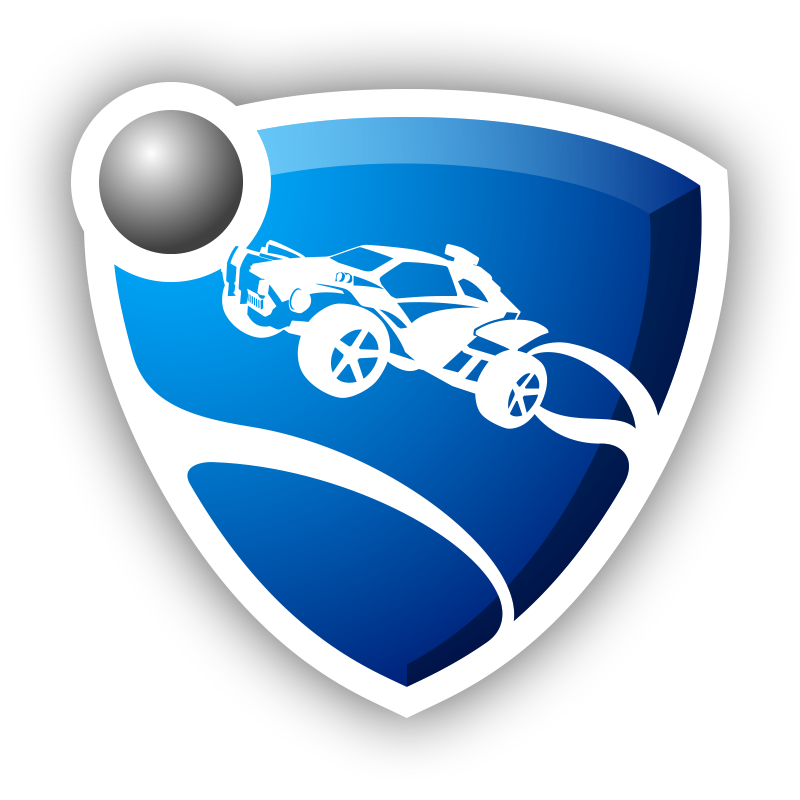
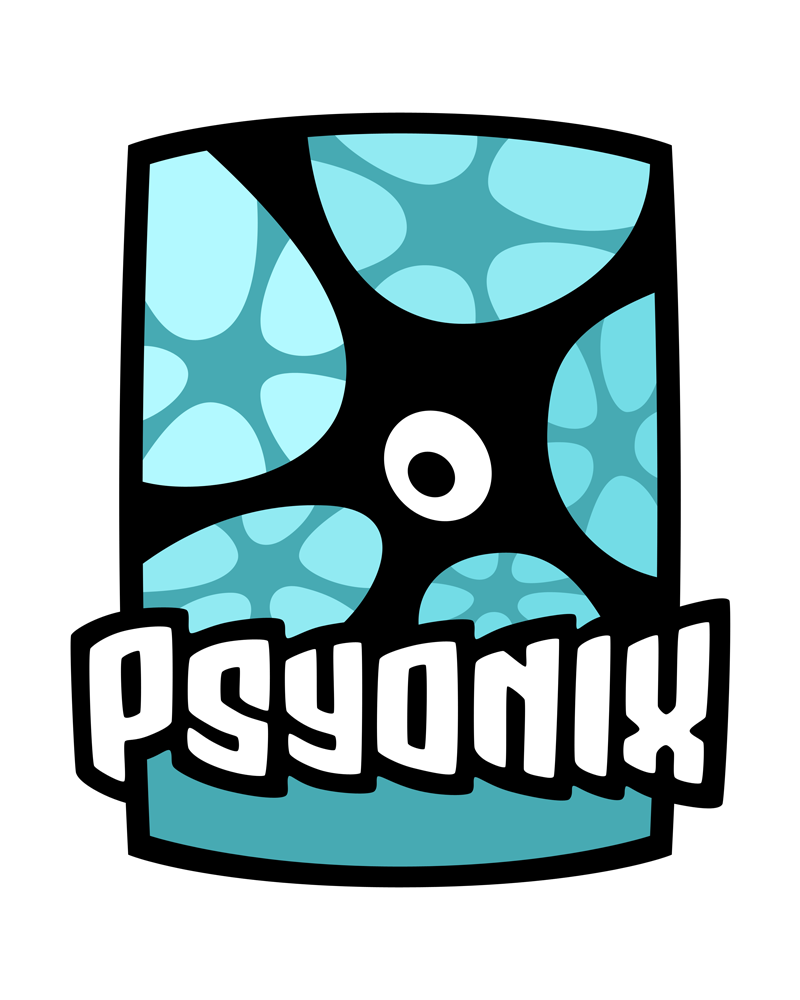

Rocket league Wat is het?
Rocket League is een racevoetbalspel ontwikkeld door Psyonix. In het spel besturen spelers een auto waarmee ze moeten proberen doelpunten te scoren op een veld dat overeenkomsten vertoont met een voetbalveld. Het spel is beschikbaar op de Nintendo Switch, PlayStation 4, Xbox One en pc met Microsoft Windows of Linux via Steam. Tijdens online wedstrijden kunnen PS4- en pc-spelers met Microsoft Windows samen in één server spelen.
Speelwijze
 Rocket League is een voetbalspel waar spelers in plaats van een mens een auto besturen. Een wedstrijd wordt gespeeld tussen 2 teams, welke elk uit minimaal 1 speler bestaat en maximaal 4 spelers kan bevatten. Elke wedstrijd wordt gespeeld in een afgesloten kooi en duurt vijf minuten. De auto's hebben verschillende functies. Zo kunnen zij zeer snel remmen, springen in de lucht en op verticale oppervlaktes rijden. Het team met de meeste doelpunten wint de ronde. Bij een gelijkspel volgt een verlenging volgens het golden goal-principe. Spelers verdienen punten met handelingen als het wegwerken van een bal uit eigen doelmond, het schieten op doel en het scoren van een doelpunt. Deze punten leveren de speler nieuwe 'ranks' op die gebruikt kunnen worden om te laten zien welk niveau die speler is. Rocket League ondersteunt offline en online splitscreen, een seizoensmodus, oefenwedstrijden en online multiplayer.
Rocket League eSports
 Rocket League wordt inmiddels ook competitief gespeeld in open kampioenschappen georganiseerd door Psyonix zelf, met als vlaggenschip haar eigen Rocket League Championship Series (RLCS). Het eerste seizoen werd gewonnen door het Amerikaanse e-sports team iBUYPOWER Cosmic. In totaal werd er 75.000 dollar aan prijzengeld vergeven tijdens het eerste kampioenschap. Voor het 2e seizoen is de prijzenpot verhoogd naar 250.000 dollar. Dit is gewonnen door Flipsid3 Tactics. Het derde seizoen was de prijzenpot weer verhoogd naar 300.000 dollar en werd gewonnen door Northern Gaming. Seizoen vier met een prijzenpot van 350.000 dollar werd gewonnen door het Europese Gale Force eSports.